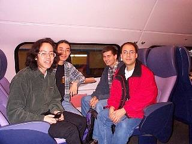

Problem G
The Trip
Input: Standard Input
Output: Standard Output
A number of students are members of a
club that travels annually to exotic locations. Since their very successful
trip to Eindhoven, their destinations have included Orlando, Vancouver, Honolulu,
and Beverly Hills. This spring they are planning a trip to Prague.

The group agrees in advance to share expenses equally, but it is not practical to have them share every expense as it occurs. So individuals in the group pay for particular things, like meals, hotels, taxi rides, plane tickets, etc. After the trip, each student's expenses are tallied and money is exchanged so that the net cost to each is the same, to within one cent. In the past, this money exchange has been tedious and time consuming. Since the Eindhoven trip the club has used a scheme that, for a given list of expenses, ensures that the minimum amount of money changes hands in order to equalize (within a cent) all the students' costs.
The students have not found the scheme to be completely satisfactory. Instead of minimizing the amount of money that changes hands, the students now wish to minimize the total number of payments that must be made between individuals. After all it is easier to pay $10.00 to one person than to pay $3.33 to each of three people.
Standard input
will contain the information for several trips. The information for each trip
consists of a line containing a positive integer, n, the number of
students on the trip, followed by n lines of input, each containing the
amount, in dollars and cents, spent by a student. There are no more than 10
students and no student spent more than $10,000.00. A single line
containing 0 follows the information for the last trip.
For each trip, output a line stating the total number of payments that must be made between individuals to equalize the students' costs within one cent.
310.0020.0030.00415.0015.013.003.01415.0015.0015.0010.0020.950.930 |
1231
|
Problemsetter:
Gordon Cormack, Reviewer of Elite Problemsetters' Panel
Special Thanks to Derek Kisman and Howard
Cheng (Alternate Solutions)
It's in defeat you need role models like Pat Rafter.
Hundreds of thousands of young Australians would have watched Rafter endure another Wimbledon tennis final loss, despite the late hour. They could not have had a finer teacher in the art of how to make sport a character-builder, rather than a character-wrecker.
These are some of the lessons Rafter illustrated so superbly for them, in word and deed:
1. Don't pretend it doesn't hurt. It's OK to be disappointed. "This time hurts a little bit more than last time," Rafter said. "The first time was just fun to be there. Second time, you know - I didn't want second. I wanted to win this time."
2. Take it on the chin and get over it. Move on. It's history. "Someone has to lose and I'm the loser again," said Rafter. "I've had my little depression." His mum Jocelyn said: "He'll get himself together again. Pat's not a person to look backwards."
3. Keep it in perspective. "It's disappointing but at the end of the day it's a tennis match," said Rafter.
4. Pay respect to your opponent. "You've got to take your hat off (to Goran Ivanisevic)," said Rafter. "He was just serving really well, it's not much fun down the other end trying to get it back." That final hug at the net is also worthy of remark. It was one of mutual respect, the sort of thing that ennobles sport.
5. Pay respect to yourself, too. It's an achievement just reaching the final, or the semi, or the team, or sometimes just the first round. "I was really close again," Rafter acknowledged. 6- Find some humour in it all, somewhere. Rafter gave a self-derisory laugh and said: "I'm sick of making bloody history."
6. Try to learn from it. What might you have done better? What could you have done differently? How might you have prepared better? Rafter, like all pros, will be automatically trying to answer those questions.
7. Make no excuses. Rafter didn't blame his shoulder, or the delay in playing the final, or the weather, or crowd noise, or line calls, or anything. Accept that you lost to a better player on a particular day.
8. Make sure you enjoy the whole experience, from the pre-match nerves to the post-match speeches. "It was an amazing, amazing atmosphere," said Rafter. "It was electric. This is what we play for, this is what it's all about - it was so much fun. If you can have that attitude, you're not going to get too down."
9. Thank those who have helped you, like your family, friends and fans, and really mean it. Rafter didn't forget coach Tony Roche, either. "He's a great mate," he said. "I would have loved to have done it for him as well."
Small wonder his brother Jim Rafter was able to declare: "We're proud of Pat, not for the matches that he wins but for the graciousness in which he accepts defeat."
Taken from the link http://www-rohan.sdsu.edu/dept/coachsci/csa/vol91/conway.htm
Suggested by: Prof. Gordon Cormack